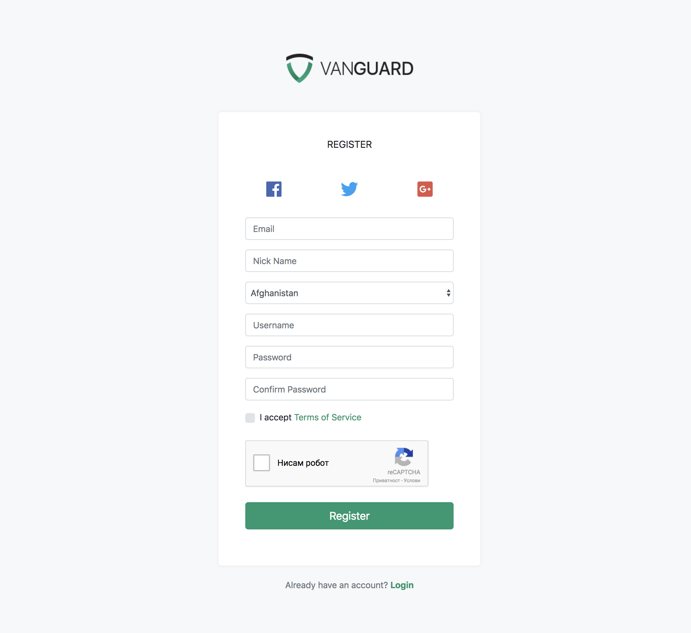

Adding custom fields to registration form
- Introduction
- Adding Missing Database Fields
- Updating Controller Form Rendering Method
- Updating Form HTML
- Updating User Model
- Adding Validation
- Updating Controller to Accept New Form Fields
Introduction
Registration form customisation is something that probably no one can avoid if it comes to Vanguard customisation. If you are familiar with Laravel then adding another field into registration form will be an easy task for you.
However, for those who doesn't have a clue how Laravel is working, this will be challenging tutorial.
Lets say that we want to add two new fields into the registration form: Nick Name and Country. Also, we will make Nick Name to be required and minimum 3 characters long.
This is probably the most difficult scenario, so if you understand how this one is working, then you can add any other field into that form.
Adding Missing Database Fields
Since Nick Name does not exist into our database schema, we will have to add it. There are many ways to add this field into users table, and we will cover two of them.
Laravel's Migrations (recommended)
Creating migrations for your database schema is the best way to create and modify your database schema. Also, since migrations are basically PHP files, those files will be stored on your Version Control System (Git, Mercurial, etc.) so any of your coworkers will have access to database schema that is being used for your project, and, the best thing about it, is that you will be able to see full history of changes for any of your database tables.
So, for our tutorial, we will create new database migrations by typing the following command into our terminal:
php artisan make:migration add_nick_name_field_to_users_tableAfter this command is executed, new file will be created into our database/migrations folder. Since we want to alter the existing users table, the newly created migration class will look like following:
use Illuminate\Database\Schema\Blueprint;
use Illuminate\Database\Migrations\Migration;
class AddNickNameFieldToUsersTable extends Migration
{
/**
* Run the migrations.
*
* @return void
*/
public function up()
{
Schema::table('users', function (Blueprint $table) {
$table->string('nick', 20);
});
}
/**
* Reverse the migrations.
*
* @return void
*/
public function down()
{
Schema::table('users', function (Blueprint $table) {
$table->dropColumn('nick');
});
}
}
When it is executed, this migration will add new column into users database table called nick, and it will be type of VARCHAR(20). If you want to learn more about Laravel Migrations, check the documentation.
Now, since our migration is ready, we can execute it by typing the following command into our terminal:
php artisan migrateIf you check the database using PHPMyAdmin (or some other similar app) you will see that our nick field is added to users database table.
Manually Add Missing Field
If for some reason you decide not to use the migrations for altering the database, you can manually add missing nick field using PHPMyAdmin or similar application. Just make it varchar(20) and we are good to go.
Note! This maybe looks easier for now, but what if you forgot to tell to your co-workers that you have added that new field? Or even if you tell them, each one of them will have to create it manually.
Updating Auth Controller
Since we are going to allow users to select their country on registration form, we have to fetch all available countries from the database, and to pass those countries to our registration view.
In order to do that, we will have to edit app/Http/Controllers/Web/Auth/AuthController.php file and update it's AuthController::getRegister method as following:
/**
* Show the application registration form.
*
* @param CountryRepository $countryRepository
* @return \Illuminate\Http\Response
*/
public function getRegister(CountryRepository $countryRepository)
{
//...
$countries = $countryRepository->lists();
return view('auth.register', compact('socialProviders', 'countries'));
}Now, we have updated our controller method that is responsible for displaying the registration form and provided an array of countries to it in following format
[
'country1_id' => 'country1_name',
'country2_id' => 'country2_name',
//...
]We are now ready to update the form HTML.
Updating Form HTML
As you can see from previous code snippet, where we have updated getRegister method for our AuthController, there is some view function call that says view('auth.register', .... This actually means that it Laravel will look for our view into resources/views/auth/ directory, it will look for file called register.blade.php. That's the file we need to update.
So, we will update resources/views/auth/register.blade.php file and add the following code snippet right after email input field:
<div class="form-group input-icon">
<i class="fa fa-user"></i>
<input type="text" name="nick" id="nick" class="form-control"
placeholder="Nick Name" value="{{ old('nick') }}">
</div>
<div class="form-group">
{!! Form::select('country_id', $countries, old('country_id'),
['class' => 'form-control', 'id' => 'country_id']) !!}
</div>This will render us the following registration form:

Note! If you curious how
Form::selectworks, check Laravel Collective documentation.
Adding Validation
Since we have defined that Nick Name will be an required field with minimum length of 3 characters, we have to add one more validation rule inside $rules array available in RegisterRequest::rules method in app/Http/Requests/Auth/RegisterRequest.php file.
So, right after password validation rules, add the following rule
$rules = [
//...
'nick' => 'required|min:3'
];This validation rule will make our Nick Name field required his minimum length must be 3 characters.
Note! If you want to know more about Laravel validation and available validation rules, check the validation documentation.
Updating User Model
Since we have added new database field inside our users table, we have to update our users model and add that field to your fillable attributes array.
So, just edit app/User.php and add field nick into $fillable array, right after remember_token field.
Updating Controller to Accept New Form Fields
And the last step is to actually tell to our AuthController that we want him to use two more fields which we have added to our registration form.
To do that, just go to AuthController and inside postRegister method, replace
$request->only('email', 'username', 'password')with
$request->only('email', 'username', 'password', 'country_id', 'nick')And that's it, your registration form now have two more fields that are automatically validated and stored into the user's table after successful registration. :)